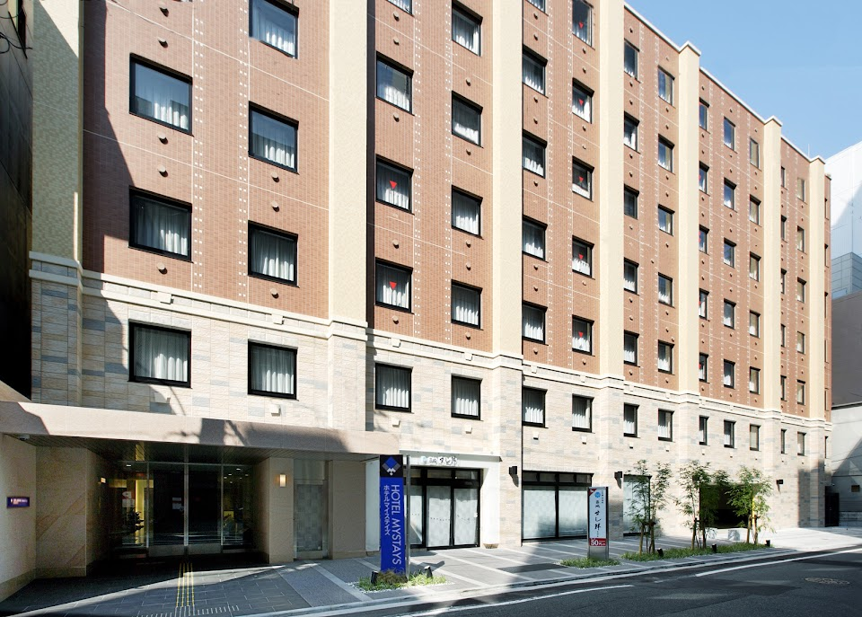

이 호텔은 오감·안전 관련 불만이
후쿠오카 평균보다 2.1배 많아요!

위치
3 Chome-5-7 Tenjin, Chuo Ward, Fukuoka, 810-0001 일본 · 1박 약 7만원 (10만원 미만 가격대)
이 호텔에서 실망할 확률
13%
후쿠오카 평균(9%)보다 주의가 필요한 수준이에요
최근 투숙객 100명 중 13명이 심각한 문제를 언급했어요
최근 투숙객 100명 중 13명이 심각한 문제를 언급했어요
우수
평균 9%
위험
최근 리뷰일수록 높은 가중치로 반영됩니다
분석 리뷰 500건 · 기준 2026년 3월
분석 리뷰 500건 · 기준 2026년 3월
카테고리별 위험도
후쿠오카 평균 = 50 · 3배 나쁘면 100
호텔 마이스테이스 후쿠오카 텐진
후쿠오카 평균
리스크 상세 분석
대분류 6개 · 소분류 20개 전체 — 숫자는 위험도(0~100), 후쿠오카 평균이면 50이에요
🧼위생 경보
양호 · 위험도 41 · 후쿠오카 상위 48%
양호평균 50위험
-
침구/바닥 청결얼룩 · 머리카락 · 먼지36
-
청소 서비스청소 불량 · 쓰레기 방치51
-
해충/곰팡이벌레 · 빈대 · 곰팡이20
👂오감 지옥
위험 · 위험도 77 · 후쿠오카 하위 7%
양호평균 50위험
-
벽간/외부 소음옆방 소리 · 도로 소음59
-
악취 역류하수구 · 담배 · 곰팡내95
-
기기 소음에어컨 · 냉장고 소음9
🏚️시설 사기단
주의 · 위험도 57 · 후쿠오카 하위 23%
양호평균 50위험
-
공간/노후화비좁음 · 낡은 시설53
-
냉난방/수압냉난방 불량 · 수압 약함80
-
네트워크/TV와이파이 · TV 불량30
🗺️동선 파괴자
양호 · 위험도 25 · 후쿠오카 상위 21%
양호평균 50위험
-
역/거점 접근성역에서 멀다 · 찾기 어려움23
-
지형적 난관언덕 · 계단36
-
주변 편의성편의점 · 식당 없음16
-
허위 위치 정보위치 정보 불일치0건4
💬불친절 레이더
양호 · 위험도 24 · 후쿠오카 상위 11%
양호평균 50위험
-
응대 태도불친절 · 무시22
-
처리 지연체크인 지연 · 대기18
-
사후 대처보상 거부 · 무대응31
-
소통 불가언어 소통 문제0건4
🔒안전 그림자
위험 · 위험도 72 · 후쿠오카 하위 15%
양호평균 50위험
-
보안 시설도어락 · CCTV65
-
주변 치안밤길 · 우범지대23
-
사생활 보호방음 · 프라이버시23
위험 70+주의 45~70양호 ~45
불만 리뷰 5건 미만 소분류는 위험 등급을 붙이지 않아요 · 인용문은 리뷰 원문 발췌입니다
구글 별점 분포
최근 1년 2점 이하 리뷰 비율은 12% 입니다.
총 273건
- 1점5%
- 2점4%
- 3점11%
- 4점27%
- 5점53%
리뷰
심각도 · 최신순
이런 호텔은 어떠세요?
비슷한 가격대·가까운 위치에서 실망 확률이 낮은 순이에요
-
양호실망 확률 4%

Wellcabin Tenjin
ウェルキャビン天神구글 4.2 · 리뷰 459개1박 약 5만원 -
양호실망 확률 3%

베스트 웨스턴 플러스 후쿠오카 텐진-미나미
ベストウェスタンプラス福岡天神南구글 4.1 · 리뷰 698개1박 약 9만원 -
양호실망 확률 5%

코트 호텔 후쿠오카 텐진
コートホテル福岡天神구글 3.8 · 리뷰 726개 -
양호실망 확률 3%

리치몬드 호텔 하카타 에키마에
リッチモンドホテル博多駅前구글 4.1 · 리뷰 989개1박 약 8만원 -
양호실망 확률 5%

토요코인 후쿠오카 텐진
東横INN福岡天神구글 3.9 · 리뷰 1,027개1박 약 9만원 -
양호실망 확률 6%

헤이와다이호텔 텐진
平和台ホテル天神구글 3.6 · 리뷰 683개1박 약 5만원 -
양호실망 확률 5%

호텔 그란돌체 하카타
ホテルグランドルチェ博多구글 4.5 · 리뷰 333개1박 약 9만원 -
양호실망 확률 6%

램프라이트북스호텔 후쿠오카
ランプライトブックスホテル福岡구글 4.4 · 리뷰 587개1박 약 8만원